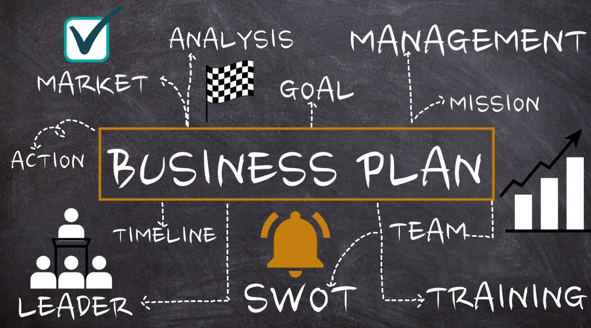

How to Start an Online Business: A Step-by-Step Guide
Starting an online business is an exciting venture that offers the potential for financial freedom and creative independence. With the right planning and execution, you can build a successful online business from the ground up. This guide will walk you through the essential steps to get started.
1. Identify Your Niche
The first step in starting an online business is identifying a niche—a specific market or audience you want to target. Consider your interests, expertise, and the needs of your potential customers. A well-defined niche allows you to focus your efforts and stand out in a crowded market.Tips for Finding Your Niche
- Look for gaps in the market or areas with high demand but low competition.- Consider your passions and skills—what do you enjoy doing or know a lot about?
- Conduct market research to understand your target audience's needs and preferences.
2. Create a Business Plan
A business plan is your roadmap to success. It outlines your business goals, target market, revenue streams, marketing strategies, and more. A solid business plan not only helps you stay organized but also makes it easier to secure funding if needed.Key Elements of a Business Plan
- Executive Summary: Executive Summary: A brief overview of your business.- Market Analysis: Insights into your target market and competition.
- Business Model: How you plan to make money (e.g., selling products, services, or digital content).
- Marketing Plan: Strategies for attracting and retaining customers.
- Financial Projections: Expected costs, revenue, and profitability.
Start With Purpose, Grow With Passion & Succeed With Persistence .
3. Choose Your Business Structure
Decide on the legal structure of your business. The most common options are sole proprietorship, partnership, limited liability company (LLC), and corporation. Each structure has its own legal and tax implications, so it's important to choose the one that best suits your needs.Common Business Structures:
- Sole Proprietorship: Simple and easy to set up, but you’re personally liable for business debts.- Partnership: Similar to a sole proprietorship, but with two or more owners.
- LLC: Offers liability protection without the complexity of a corporation.
- Corporation: More complex but offers the most protection from personal liability.
4. Register Your Business
Once you've chosen your business structure, you'll need to register your business name with the appropriate government authorities. This might include filing for a "Doing Business As" (DBA) name, registering for an employer identification number (EIN), and obtaining any necessary licenses or permits.Steps to Register Your Business:
- Choose a unique and memorable business name.- Register your business name with the relevant state or local authorities.
- Apply for an EIN from the IRS (if applicable).
- Obtain any necessary licenses or permits for your industry.

5. Set Up Your Online Presence
Your online presence is crucial to your business’s success. This includes setting up a website, creating social media profiles, and optimizing for search engines (SEO).Creating Your Website:
- Domain Name: Choose a domain name that reflects your brand.- Web Hosting: Select a reliable hosting service that suits your needs.
- Website Builder or CMS: Use platforms like WordPress, Shopify, or Squarespace to create your site.
- Design and Content: Ensure your website is user-friendly, visually appealing, and filled with valuable content.
Social Media and SEO:
- Create profiles on platforms where your target audience is most active.- Use SEO strategies to improve your website’s visibility on search engines.
- Regularly update your content to engage your audience and drive traffic.
6. Set Up Payment and Shipping Options
If you plan to sell products or services online, you'll need to set up secure payment and shipping options. This involves integrating payment gateways like PayPal, Stripe, or Square into your website, and selecting reliable shipping providers.Payment and Shipping Tips:
- Ensure your payment process is seamless and secure.- Offer multiple payment options to accommodate different customer preferences.
- Choose a shipping provider that balances cost and reliability.
Turn Your Vision InTo Venture, & Your Passion InTo Profit .
7. Launch Your Business
With everything in place, it’s time to launch your business. This is where your marketing plan comes into action. Start promoting your business through social media, email marketing, content marketing, and paid advertising.Launching Strategies:
- Host a virtual launch event or offer special promotions to attract initial customers.- Leverage social media influencers or partnerships to expand your reach.
- Monitor your marketing efforts and adjust your strategies as needed.
8. Monitor and Grow Your Business
After launching, your focus should shift to monitoring your business's performance and seeking growth opportunities. Use analytics tools to track key metrics like website traffic, conversion rates, and customer satisfaction.Growth Strategies:
- Expand your product or service offerings based on customer feedback.- Explore new marketing channels or markets.
- Continuously optimize your website and marketing strategies.